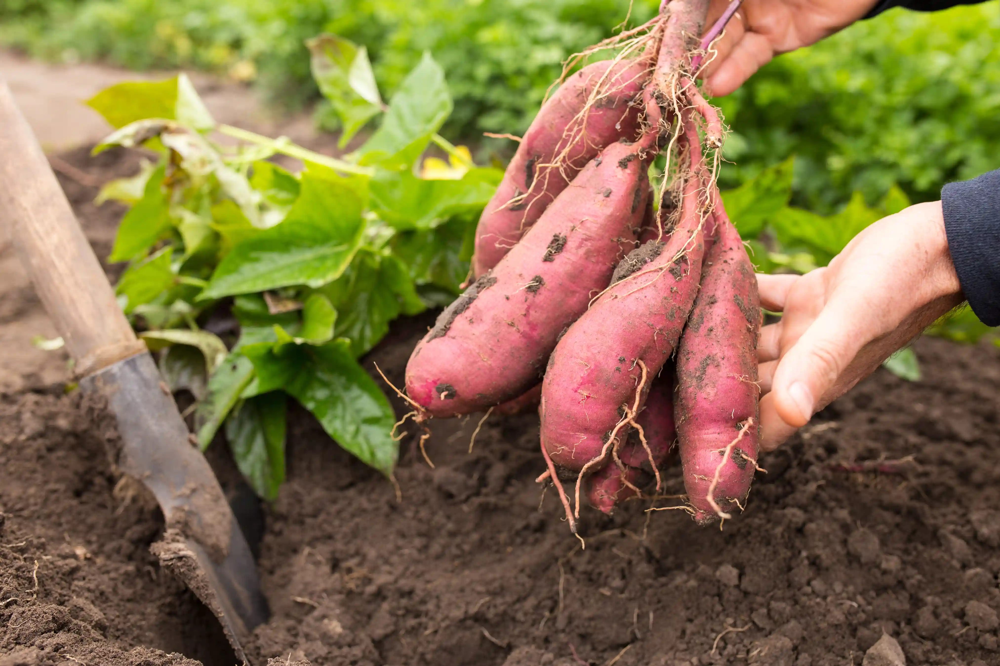
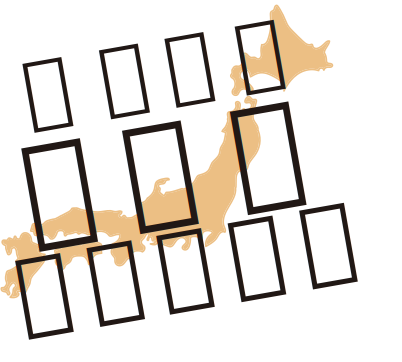

日本語
北海道産【さつまいも】
0月〜0月FEATURE
特徴
紅優甘
名前のとおり特に甘さが優れ、糖化した芋は、ドリップが滴るほど甘い焼き芋になります。麦芽糖は、水飴の主成分であるため、優しい自然な甘さを味わうことができます。
出展者情報
ダミーテキストダミーテキストダミーテキスト ダミーテキストダミーテキストダミーテキスト ダミーテキストダミーテキストダミーテキスト ダミーテキストダミーテキストダミーテキスト
TRACEABILITY
トレーサビリティ
04.22-05.22.2022

農業情報、収穫状況
ダミーテキストダミーテキストダミーテキストダミーテキスト
10.22.2022
検品情報
ダミーテキストダミーテキストダミーテキストダミーテキスト
